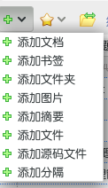
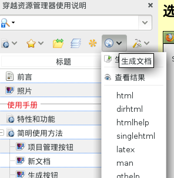
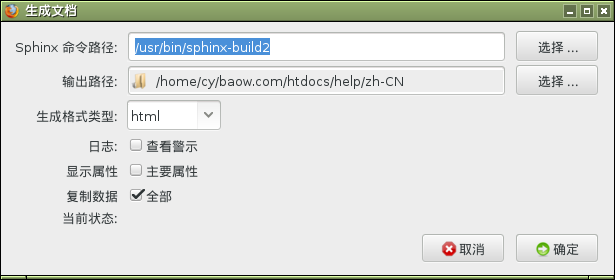

通过 Baow 资源管理器可以进行文档编写，然后生成网页格式的文件。步骤如下：
打开 Firefox 浏览器, 选择菜单 Baow ‣ 在侧栏显示
从左侧栏选择菜单 添加文档 ， 然后在弹出的对话框中输入标题等信息，然后打开， 最后 保存 。

从左侧栏当中点击按钮  。
。

选择 Sphinx 命令的路径，并选择文档输出的路径，最后点击 确定 。

好了， 开始生成 ，等一会，自动打开显示生成结果。 如果你想充分使用Baow的强大功能，应该建立项目，并进行详细的配置。方法是点击项目管理按钮  ，然后进行设置。
，然后进行设置。
Baow 文档编辑器在生成网页的时候采用 Sphinx 编写文档的方式进行。 Sphinx 源于 Python 编程语言当中支持的 reStructuredText 。
reStructuredText 是一种简单易用的标记语言，通过按照 reStructuredText 规定好的语法进行编写，就可以生成网页在内的多种格式的文档。 Sphinx 对 reStructuredText 进行了扩展，加入了更多的标记，然后可以将多个文件串联在一起，形成网页文件。 Baow 采用 Sphinx 生成网页的方式，只需要在 Firefox 浏览器当中编写文档就可以了，简化了 Sphinx 编写文档的方式。
参见
Baow 和 Sphinx 是完全兼容的，改进了编写的方式，只要按照树状结构组织章节，就能自动生成目录结构。不用加入用于标明标题样式的字符了。